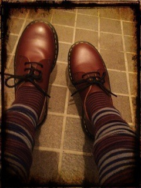
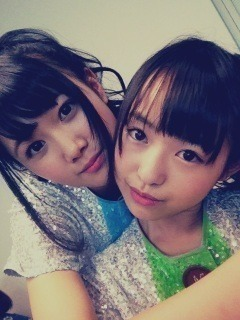

| 2012/09 11 Tue | 227回目*marika |
いつも読んでくださってる方、
初めて読んでくださった方、
コメントしてくださった方、
ありがとうございます。
がっこ終わったなうだよ。
...
はははは
 ♪
♪
♪
昨日はね、ママさんと
ショッピングしたんだ
 ‼
‼
‼
靴下いっぱい買った←

ピエロみたいでかわいい
靴はDr.Martens。
欲しかったチェリーレッド！
いっぱい履こっ
ぶ厚くて重いニットも買いました。
秋物というか冬物だわ笑
こんど載せます

**********
 コレがなきゃ寝れない！
コレがなきゃ寝れない！
っていうのある？
 おっきいワニのぬいぐるみ。
みんなのコメント見てるとき
おっきいワニのぬいぐるみ。
みんなのコメント見てるとき
ニヤニヤしながら見てるのー？
なーに言ってんだあ
 ふは
ふは
1幕の衣装、メンバーそれぞれ
めっちゃ可愛いかったけど、
普段のレッスン着なん?
あれはレッスン着の衣装だから
普段のと違うよ

PARCO劇場は少し小さめの劇場
だけど、ステージ上から客席の
お客さんの顔は見えた？
しっかりと‼
好きなお洋服のブランドや
日頃読んでいるファッション雑誌
など教えて下さい！！
装苑読んでます。
最近はNYLONも

ムチャチャあちゃちゅむ
のような雰囲気すきです
BEAMSBOYも。
まりっかって髪の毛くくらないん？
ストレートにしないん？
基本はぼさっとしてて
ゆるゆるのダウンです。
ストレートはたまにするよ！
次の個握なんにしよ

さゆりんごとかまいやんとか
そっち系統の服は着ないん？
（見てみたい(^з^)-☆）
さらさらしたの着たことないな

自分から着ようとは思わないけど、
衣装とかで着たいなあ。
大好きな料理がなんですか？
ママのジェノベーゼ、
ピーマン使ったやつとか
タジン鍋とかミルフィーユ鍋とか。
おいしい
 ///
///
///
**********
だいぶ前のしゃしん


らりんっ♪
では、浪漫のナレ録り
頑張りまりっか！
まりか
コメント(137)
2012/09/11 15:48